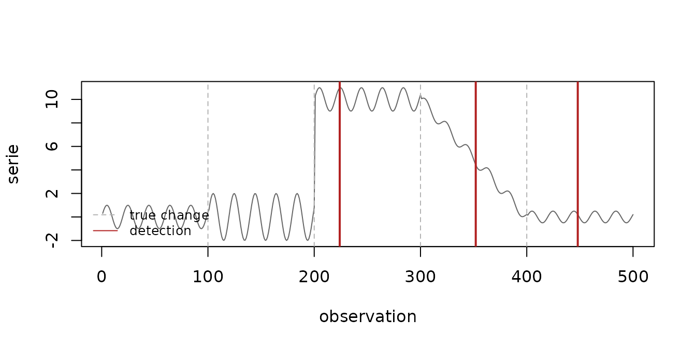
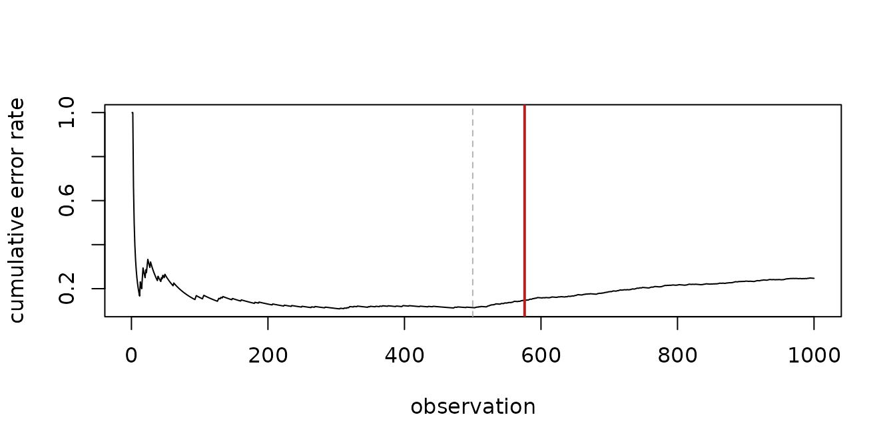

Heimdall detects concept drift in data streams: moments when the data, or the relationship between the data and the target, stop behaving as they did before. This vignette shows the workflow shared by every detector in the package and when to use each family of detectors.
Real and virtual concept drift
Heimdall distinguishes two kinds of change:
-
Real concept drift changes the relationship between
the inputs and the target. It is visible in the errors of a predictive
model, so it is monitored with error-based detectors:
dfr_ddm(),dfr_eddm(),dfr_hddm(),dfr_ecdd()anddfr_cusum(). They receive1for a wrong prediction and0for a correct one. -
Virtual concept drift changes the distribution of
the inputs, whether or not the model is affected. It is monitored with
distribution-based detectors, which look at a numeric feature
directly:
dfr_adwin(),dfr_kswin(),dfr_kldist(),dfr_mcdd(),dfr_lbdd()anddfr_page_hinkley().dfr_aedd()does the same for several features at once.
The streaming contract
Every detector follows the same three rules:
-
update_state(obj, value)processes one observation and returns a list with the updated detector (obj) and a flag (drift) telling whether a drift was detected in that call; -
obj$driftedis sticky: it staysTRUEafter the first detection; -
reset_state(obj)returns the detector to its initial state, usually right after a drift has been handled.
The loop below is the canonical way of running a detector over a stream. It works unchanged for any detector in the package.
detect <- function(model, stream) {
output <- list(obj = model, drift = FALSE)
drifts <- integer(0)
for (i in seq_along(stream)) {
output <- update_state(output$obj, stream[i])
if (output$drift) {
drifts <- c(drifts, i)
output$obj <- reset_state(output$obj)
}
}
drifts
}Virtual drift: monitoring a feature
st_drift_examples$univariate is a synthetic series whose
behaviour changes at the observations flagged in the event
column. ADWIN keeps a window of adaptive size and shrinks it whenever
its older and newer parts have significantly different means.
data(st_drift_examples)
serie <- st_drift_examples$univariate
drifts <- detect(dfr_adwin(), serie$serie)
drifts
#> [1] 224 352 448
plot(serie$serie, type = "l", col = "grey40", xlab = "observation", ylab = "serie")
abline(v = which(serie$event), lty = 2, col = "grey70")
abline(v = drifts, col = "firebrick", lwd = 2)
legend("bottomleft", c("true change", "detection"), lty = c(2, 1),
col = c("grey70", "firebrick"), bty = "n", cex = 0.8)
Real drift: monitoring the errors of a model
Error-based detectors only need the sequence of mistakes of a model. Here the error rate jumps from 10% to 40% at observation 501.
set.seed(42)
errors <- c(rbinom(500, 1, 0.1), rbinom(500, 1, 0.4))
detect(dfr_ddm(), errors)
#> [1] 576
detect(dfr_hddm(), errors)
#> [1] 560
plot(cumsum(errors) / seq_along(errors), type = "l", xlab = "observation",
ylab = "cumulative error rate")
abline(v = 500, lty = 2, col = "grey70")
abline(v = detect(dfr_ddm(), errors), col = "firebrick", lwd = 2)
Processing a whole batch
When there is no need to react to each observation,
fit() feeds a whole batch to the detector and returns the
updated object. Because drifted is sticky, it tells whether
a drift happened anywhere in the batch.
Combining detectors
dfr_multi_criteria() combines several distribution-based
detectors. With combination = "or" any detector can raise
the alarm, with "and" all of them must report a drift
within fuzzy_window observations, and "fuzzy"
weighs each detection by how recent it is. model$detections
counts the alarms of each detector.
model <- dfr_multi_criteria(
drifter_list = list(adwin = dfr_adwin(), ph = dfr_page_hinkley()),
combination = "or"
)
model <- fit(model, data.frame(serie = serie$serie))
model$drifted
#> [1] TRUE
model$detections
#> adwin ph
#> 6 1Baselines
dfr_inactive() never reports a drift and
dfr_passive() always does. They are useful as lower and
upper references when evaluating how a model adapts.
Next steps
-
vignette("adaptive-models", package = "heimdall")shows how to retrain a model automatically when a drift is detected. - The rendered walkthroughs in the examples folder cover each detector in more detail.